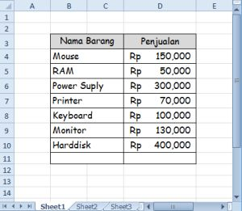
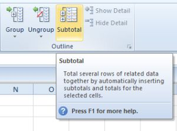
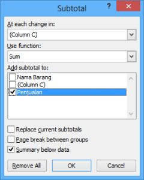
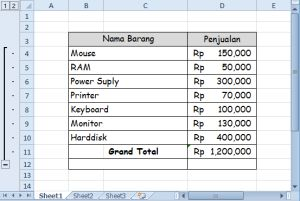
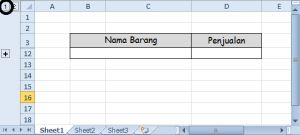
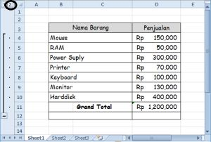

Subtotal: ringkasan per kelompok
Fungsi SUBTOTAL dan fitur Subtotal menyisipkan total per kelompok data yang sudah terurut.
Coba langsung di browserLembar kerja mini, kuis, dan tanda selesai.
Buka versi interaktif=SUBTOTAL(nomor_fungsi; rentang)
| nomor_fungsi | 1=AVERAGE, 2=COUNT, 4=MAX, 5=MIN, 9=SUM |
|---|---|
| rentang | Sel yang dihitung |
Langkah praktik
- Urutkan data berdasarkan kolom pengelompokan.
- Data > Subtotal.
- Pilih kolom At each change in, fungsi, dan kolom yang dihitung.
- Tombol angka 1, 2, 3 di kiri lembar kerja meringkas atau memperluas tampilan.
Tangkapan layar praktik
6 gambar langkah demi langkah. Klik gambar untuk membuka ukuran penuh.





